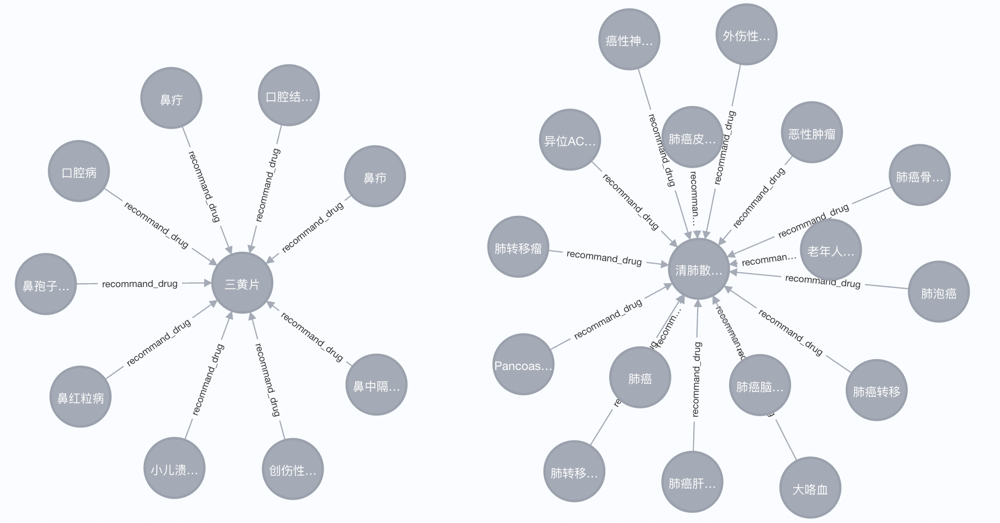

6.2 医疗知识图谱的搭建
医疗知识图谱的搭建¶
学习目标¶
- 理解如何通过图数据库构建医疗知识图谱
- 学会如何将结构化的医疗数据转化为知识图谱
- 掌握如何使用Python代码与Neo4j交互，构建实体和关系
搭建图谱的基本步骤¶
- 步骤1: 选择图数据库
- 步骤2: 图谱搭建
- 步骤3: 图谱展示
1 选择图数据库¶
- 图数据库是存储和管理知识图谱的核心。选择合适的数据库工具对图谱的效率和可扩展性有重要影。
- Neo4j：最常用的图数据库，支持Cypher查询语言，适合大规模医疗知识图谱的构建和查询。
- RDF-based数据库（了解）：如GraphDB、Virtuoso，适合处理语义网标准的知识图谱，如使用RDF、OWL等格式。
- 相比传统Mysql等数据，图数据库的优势：
- Neo4j图数据库能高效处理复杂关系、灵活的数据结构、简洁的查询语言、适合大规模图数据和推理能力等特点。而MySQL等关系型数据库在面对多层次、动态变化的复杂关联时，表现不佳，查询性能较差，且模型的扩展性较低。因此，构建医疗知识图谱时，选择Neo4j这样的图数据库会更有优势。
2 图谱搭建¶
- 前面章节，我们已经学习了如何从文本中抽取实体、以及关系。那么如果要想搭建图谱，需要提前准备好相应的实体和关系等数据。
- 说明：
- 由于企业数据隐私性，本次搭建图谱我们将基于一个开源的医疗数据集来实现图谱的搭建。该数据集名称为：medical.json，对应存放位置：./NLP/MedicalKB/graph_data/medical.json
- 整个图谱搭建的代码实现集中于一个py脚本，该脚本中共包含：一个方法和一个类；
- 方法：用于查询medical.json的数量以及数据格式
- 类：用于实现三元组抽取、实体插入、关系插入等
- 代码路径：./NLP/MedicalKB/build_kg_utils.py
2.1 数据解析¶
- 目标：读取并理解原始医疗数据（如JSON文件中的疾病、症状、药品等信息）。
- 任务：解析
medical.json文件，展示数据的结构，准备好用于构建图谱的实体和关系。
- 构造方法：print_data_info()
-
代码实现：
def print_data_info(data_path): ''' 展示数据格式 ''' i = 0 with open(data_path, 'r', encoding='utf8') as f: lines = f.readlines() print(f'数据长度：{len(lines)}') # 8808条样本 for line in lines: data = json.loads(line) print(json.dumps(data, sort_keys=True, indent=4, separators=(', ', ': '), ensure_ascii=False)) i += 1 if i >= 5: break # 运行该函数，展示数据内容： data_path = "./graph_data/medical.json" print_data_info(data_path)
-
结果展示：
- medical.json共包含8808条样本，每个样本格式为字典样式，每个键都代表了与医疗相关的信息，它们的中文意义解释如下：
{ # 数据库中的唯一标识符。 "_id": { "$oid": "5bb578b6831b973a137e3ee8" }, # 伴随疾病或并发症。 "acompany": [ "贫血" ], # 疾病的分类，表明疾病所属的类别和科室。 "category": [ "疾病百科", "急诊科" ], # 疾病的病因 "cause": "吸入苯蒸气或皮肤接触苯而引起的中毒，有急性、慢性之分。急性苯中毒主要对中枢神经系统产生麻醉作用，出现昏迷和肌肉抽搐；高浓度的苯对皮肤有刺激作用。长期接角低浓度的苯可引起慢性苯中毒，出现造血障碍，早期常见血白细胞数减低，进而出现血小板数减少和贫血。患者可有鼻出血、牙龈出血、皮下出血、月经过多等临床表现。\n急性苯中毒多为误服或急性吸入含苯的有机溶剂所致。这些有机溶剂包括油漆、稀料、工业胶水等。慢性苯中毒是长期吸入低浓度苯及代谢产物酚类所致。", # 检查方法，列出确诊该疾病需要进行的医学检查项目。 "check": [ "血常规", "骨髓象分析", "先令氏指数" ], # 推荐药品 "common_drug": [ "布美他尼片", "十一味金色丸" ], # 治疗费用，表示在不同医院治疗此疾病的费用范围。 "cost_money": "根据不同病情，不同医院，收费标准不一致，市三甲医院约（5000——8000元）", # 治疗科室，列出推荐治疗该疾病的医院科室 "cure_department": [ "急诊科" ], # 治疗持续时间，表示从诊断到治愈所需的大概时间。 "cure_lasttime": "根据不同病情一般为2-4周", # 治疗方式，列出常用的治疗方案或方法。 "cure_way": [ "药物治疗", "支持性治疗" ], # 治愈概率，指治愈该疾病的预期成功率。 "cured_prob": "约75%", # 疾病描述，简要说明该疾病的概况和特征。 "desc": "苯(benzene)是从煤焦油分馏及石油裂解所得的一种芳香烃化合物，系无色有芳香气味的油状液体。挥发甚速，易燃易爆。工业上用作溶剂、稀释剂和化工原料。苯属中等毒类，可引起急性或慢性中毒。\n急性苯中毒是指口服含苯的有机溶剂或吸入高浓度苯蒸气后，出现以中枢神经系统麻醉作用为主要表现的病理生理过程，主要症状轻者为醉酒状，步态不稳，哭笑失常，重者意识丧失，抽搐，可因呼吸中枢麻痹或循环衰竭死亡。慢性苯中毒是指苯及其代谢产物酚类影响了骨髓的造血功能，临床表现为白细胞计数和血小板立秋持续减少，最终发展为再生障碍性贫血或白血病。也可影响神经系统，表现为神经衰弱和自主神经功能紊乱。", # 易吃食物 "do_eat": [ "鸡蛋", "大豆", "猪肉(瘦)", "樱桃番茄" ], # 药物详情，列出该疾病相关的推荐药物。 "drug_detail": [ "桂林南药布美他尼片(布美他尼片)", "雄巴拉曲神水十一味金色丸(十一味金色丸)", "西藏甘露仁青芒觉(仁青芒觉)", "金诃藏药大月晶丸(大月晶丸)", "金诃藏药仁青芒觉(仁青芒觉)"] # 容易患病 "easy_get": "多见于制鞋工人及接触化工染料的工人", # 患病概率，指该疾病在人群中的发生概率。 "get_prob": "0.065%", # 传播途径，描述该疾病的传染性和传播方式。 "get_way": "无传染性", # 疾病名称，表示该疾病的正式名称。 "name": "苯中毒", # 忌吃食物 "not_eat": [ "海蟹", "海虾", "海参（水浸）", "辣椒(青、尖)" ], # 预防措施，列出预防该疾病的建议或注意事项。 "prevent": "对于急性中毒患者，可以立即脱离现场至空气新鲜处，脱去污染的衣着，并用肥皂水或清水冲洗污染的皮肤。口服中毒者，要给患者洗胃，中毒者应卧床静息，并接受对症、支持治疗，可给予葡萄糖醛酸。要注意防止患者出现脑水肿，切记勿给心搏未停者使用肾上腺素，对由于苯中毒引起的再生障碍性贫血症患者，可给予小量多次输血及糖皮质激素治疗。", # 推荐药物，列出治疗该疾病的常用药物。 "recommand_drug": [ "布美他尼片", "十一味金色丸", "注射用布美他尼", "注射用呋塞米", "盐酸利多卡因注射液"] # 推荐食物 "recommand_eat": [ "豆腐干炒韭菜", "素炒小白菜", "白菜蛋花粥" ], # 症状，列出该疾病的典型临床症状。 "symptom": [ "恶心", "抽搐", "感觉障碍" ], # 医保状态，指该疾病的治疗是否被纳入医保。 "yibao_status": "否" }
2.2 三元组提取¶
- 任务：从数据中提取实体及对应的关系
- 构造类：class MedicalExtractor()
-
说明：本次我们基于medical.json数据，提取了4种实体，以及4种关系。
-
实体类型：
疾病:diseases 症状:symptoms 食物:foods 药品:drugs
-
关系类型
疾病-症状:[disease,'has_symptom', symptom] 疾病－忌吃食物:[disease,'not_eat', food] 疾病－易吃食物:[disease,'do_eat', food] 疾病－推荐药品:[disease,'recommand_drug', drug]
-
-
代码实现：
class MedicalExtractor(object): def __init__(self): super(MedicalExtractor, self).__init__() self.graph = Graph("http://localhost:7474", auth=("neo4j", "12345")) # 共4类节点 self.drugs = [] # 药品 self.foods = [] # 食物 self.diseases = [] #疾病 self.symptoms = []#症状 # 构建节点实体关系 self.rels_noteat = [] # 疾病－忌吃食物关系 self.rels_doeat = [] # 疾病－宜吃食物关系 self.rels_recommanddrug = [] # 疾病－热门药品关系 self.rels_symptom = [] # 疾病症状关系 def extract_triples(self, data_path): print("从json文件中转换抽取三元组") with open(data_path,'r',encoding='utf8') as f: for line in tqdm(f.readlines(), ncols=80): data_json = json.loads(line) disease = data_json['name'] self.diseases.append(disease) if 'symptom' in data_json: self.symptoms += data_json['symptom'] for symptom in data_json['symptom']: self.rels_symptom.append([disease,'has_symptom', symptom]) if 'acompany' in data_json: for acompany in data_json['acompany']: self.diseases.append(acompany) if 'recommand_drug' in data_json: recommand_drug = data_json['recommand_drug'] self.drugs += recommand_drug for drug in recommand_drug: self.rels_recommanddrug.append([disease,'recommand_drug', drug]) if 'not_eat' in data_json: not_eat = data_json['not_eat'] for _not in not_eat: self.rels_noteat.append([disease,'not_eat', _not]) self.foods += not_eat do_eat = data_json['do_eat'] for _do in do_eat: self.rels_doeat.append([disease,'do_eat', _do]) self.foods += do_eat if 'drug_detail' in data_json: for det in data_json['drug_detail']: det_spilt = det.split('(') if len(det_spilt) == 2: p, d = det_spilt d = d.rstrip(')') self.drugs.append(d) else: d = det_spilt[0] self.drugs.append(d)
2.3 实体插入¶
- 任务：将提取的实体插入到Neo4j图数据库
- 构造方法：在上述定义的类内，构造两个函数分别为write_nodes() 和create_nodes()
-
write_nodes函数实现：
- 用于构造cypher语句，将实体写入数据库
def write_nodes(self,entitys, entity_type): print("写入 {0} 实体".format(entity_type)) for node in tqdm(set(entitys), ncols=80): cql = """MERGE(n:{label}{{name:'{entity_name}'}})""".format( label=entity_type, entity_name=node.replace("'","")) try: self.graph.run(cql) except Exception as e: print(e) print(cql)
-
create_nodes函数实现
- 调用wirte_nodes函数，用于将所有实体统一写入数据库
def create_entitys(self): self.write_nodes(self.drugs, '药品') self.write_nodes(self.symptoms, '菜谱') self.write_nodes(self.foods, '食物') self.write_nodes(self.diseases,'疾病')
2.4 关系插入¶
- 任务：将实体之间的关系插入到Neo4j图数据库。
- 构造方法：在上述定义的类内，构造两个函数分别为write_edges() 和 create_relations()
-
write_edges函数实现：
- 用于构造cypher语句，将实体对应关系写入数据库
def write_edges(self,triples,head_type,tail_type): print("写入 {0} 关系".format(triples[0][1])) for head,relation,tail in tqdm(triples,ncols=80): cql = """MATCH(p:{head_type}),(q:{tail_type}) WHERE p.name='{head}' AND q.name='{tail}' MERGE (p)-[r:{relation}]->(q)""".format( head_type=head_type,tail_type=tail_type,head=head.replace("'",""), tail=tail.replace("'",""),relation=relation) try: self.graph.run(cql) except Exception as e: print(e) print(cql)
-
create_relations()函数实现：
- 调用write_edges函数，用于将所有实体关系统一写入数据库
def create_relations(self): self.write_edges(self.rels_noteat, '疾病', '食物') self.write_edges(self.rels_doeat, '疾病', '食物') self.write_edges(self.rels_symptom, '疾病', '症状') self.write_edges(self.rels_recommanddrug, '疾病', '药品')
3 图谱展示¶
- 下图是基于Neo4j数据库导入SPO三元组后展示效果：

小节总结¶
- 本小节讲解了如何选择图数据库构建医疗知识图谱，并通过定义实体和关系、导入数据及使用查询语言进行操作，完成图谱的搭建和展示。